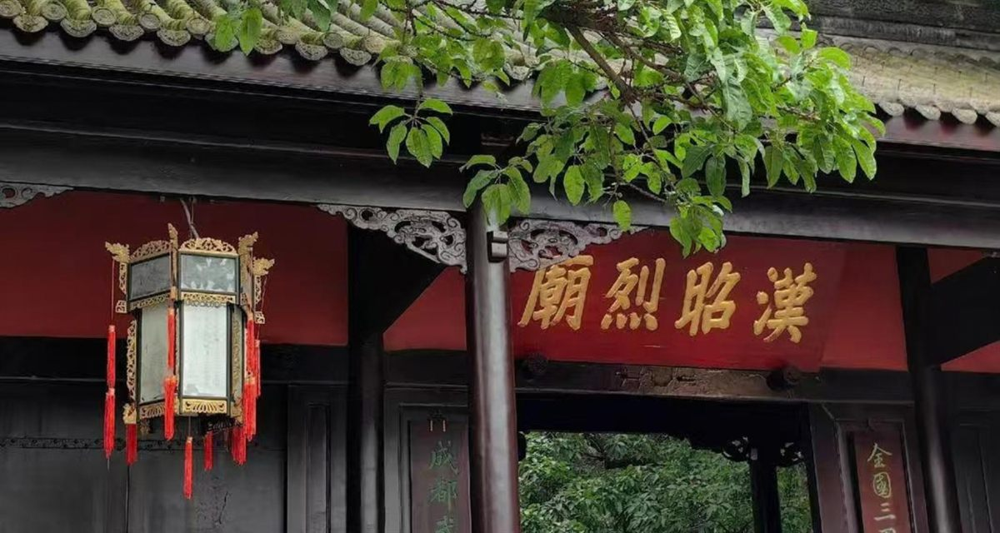
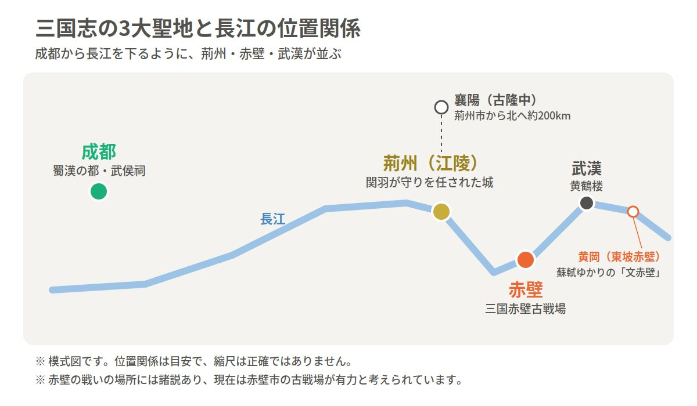

Wuhouci · 三国文化
中国唯一君臣合祀祠庙，三国英雄的精神圣地
「三顾频烦天下计，两朝开济老臣心。」红墙黛瓦间，刘备与诸葛亮相望千年，一部《三国》的蜀汉篇章，凝固在成都武侯祠。
Introduction
成都武侯祠博物馆是中国现存规模最大、保存最完好的三国文化遗址之一，也是全国唯一一座君主与臣子合祀的祠庙（刘备殿与诸葛亮殿并立）。祠内古柏森森、碑碣林立，并保存着蜀汉昭烈帝刘备的惠陵，是理解三国历史与《三国演义》文化的核心地标。
文帝刘备与丞相诸葛亮，君臣同祠，全国仅此一处。
刘备墓「惠陵」保存完好，是蜀汉帝王终焉之地。
「攻心联」「出师表」碑刻，历代文人墨客题咏不绝。
Deep Dive

祠庙正门匾额书写「汉昭烈庙」，纪念蜀汉昭烈帝刘备；因诸葛亮封武乡侯、谥号「忠武」，后世百姓更习惯称「武侯祠」。一个门匾，两种称呼，正暗合了君臣相知相托的千年佳话。

刘备殿坐北朝南、正中端坐昭烈帝贴金塑像，两侧配祀关羽、张飞；穿过过厅即达诸葛亮殿，羽扇纶巾的卧龙先生塑像名扬四海。殿宇巍峨，塑像庄严，旧时香火不绝。
惠陵即刘备墓，陵丘封土保存完好，史载「昭烈帝刘备葬惠陵」，是学界公认的蜀汉帝陵。园内的三义庙供奉刘关张，桃园结义的故事在此有了具象的寄托。
武侯祠位于武侯祠大街231号，与锦里紧邻，是三国文化游 + 成都美食游的最经典组合之一。
FAQ
Key Points
汉昭烈庙、诸葛亮殿、惠陵、三义庙，一处不落。
「攻心联」与「三绝碑」，读懂它们就读懂了武侯祠。
红墙夹道竹影婆娑，汉服照与旗袍照绝配。
祠庙 + 老街相邻，下午逛庙、入夜逛街。